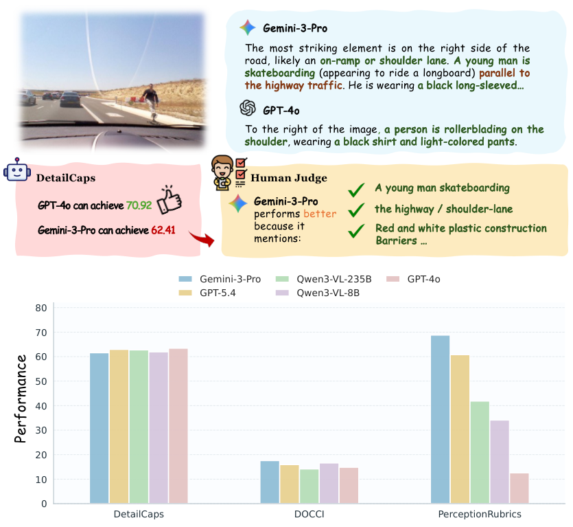
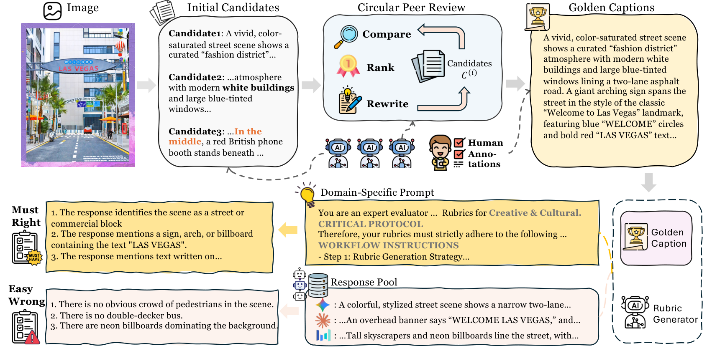
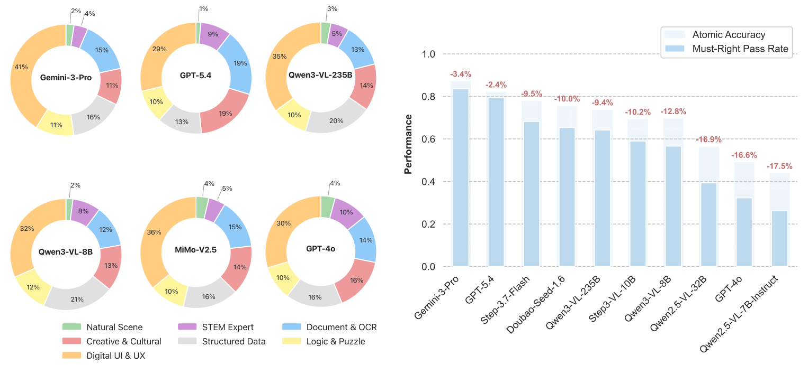
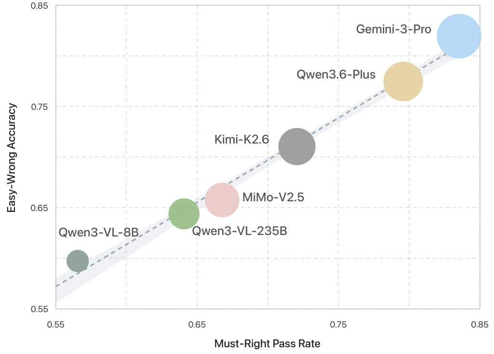
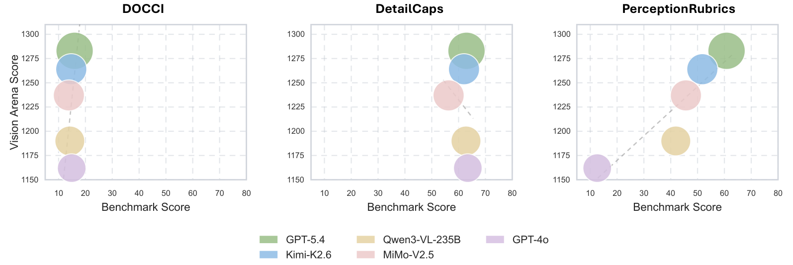
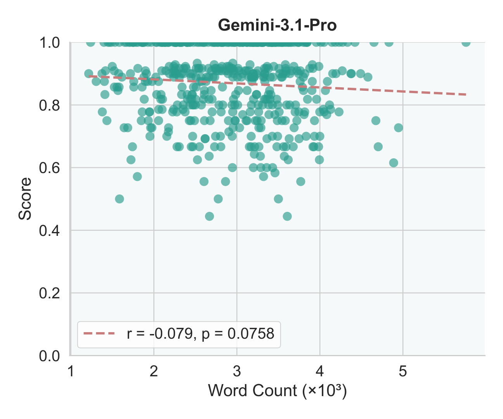
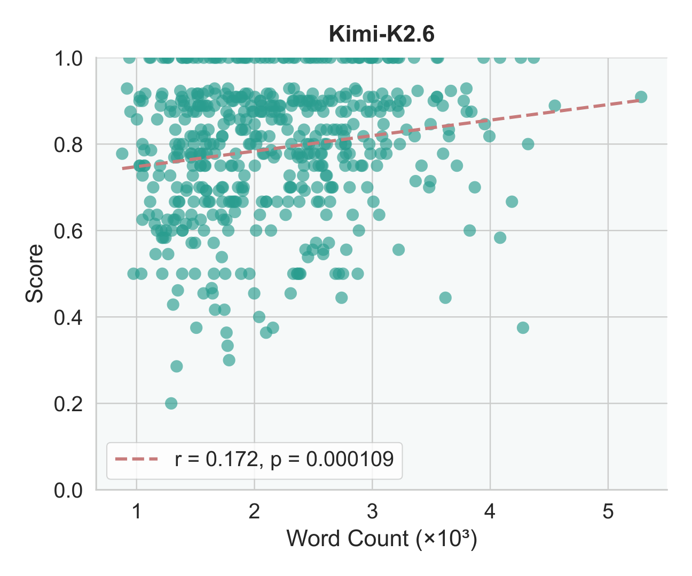
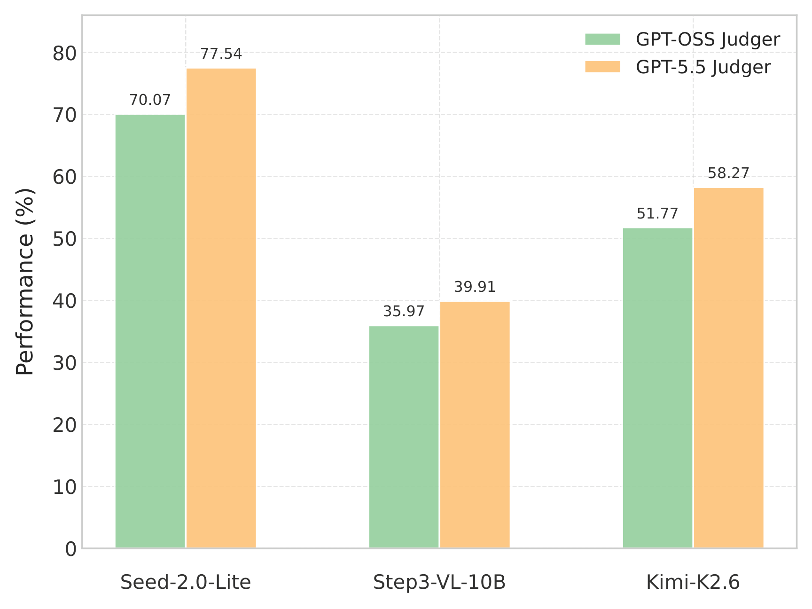
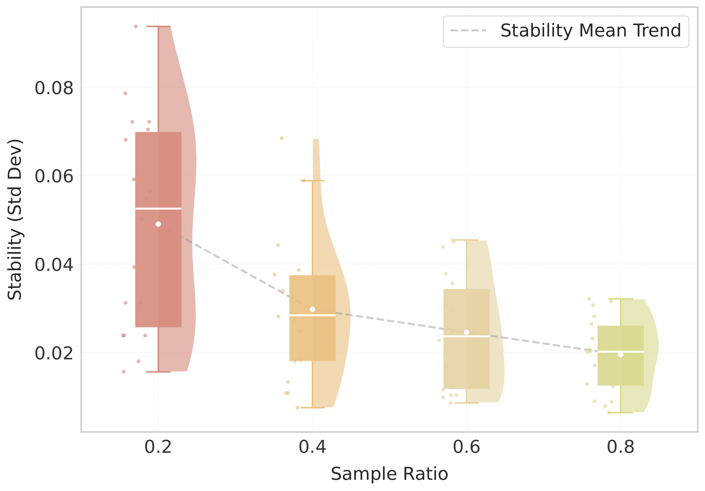

Current perception benchmarks suffer from an evaluation paradox: leaderboards are increasingly saturated, yet models remain perceptually brittle in real-world use. We introduce PerceptionRubrics, a rubric-based evaluation framework that shifts assessment from holistic semantic matching to rigorous atomic auditing. It pairs 1,038 information-dense images with over 10,000 instance-specific rubrics, derived from Golden Captions constructed through a novel Circular Peer-Review consensus pipeline and distilled into a dual-stream system of Must-Right (essential facts) and Easy-Wrong (fine-grained details) rubrics.
Crucially, PerceptionRubrics implements a Gated Scoring mechanism: unlike linear averages, failure on mandatory visual facts triggers sharp binary penalties. Extensive evaluation yields three insights:
(1) The Reliability Gap. Models often verify fragmented elements correctly yet fail strict
conjunctive constraints, exposing brittleness in dense domains such as GUIs.
(2) Open–Closed Stratification. Contrary to reasoning trends, a persistent ~8% perception
deficit separates the open-source frontier from proprietary leaders.
(3) Human-Aligned Rigor. Our gated metrics substantially out-align conventional benchmarks with human
preference, validating that strict perceptual fidelity is a prerequisite for reliable generation.

To bypass the visual-grounding gap of direct image-to-rubric generation, we adopt a caption-centric pipeline. We first transcribe each image into a comprehensive Golden Caption, then distill rubrics from it.

The resulting benchmark contains 1,038 images and 10,718 rubrics (4,053 Must-Right + 6,665 Easy-Wrong; ~10.3 per image) spanning seven domains: Natural Scene, Document & OCR, Digital UI/UX, Structured Data, STEM & Expert, Logic & Puzzle, and Creative & Cultural. Golden Captions average 770 words—5–6× denser than prior detailed-captioning benchmarks.
We use an LLM-as-a-Judge to verify each rubric as a boolean (True/False), then apply a non-linear, gated aggregation that mirrors human error sensitivity:
This ensures a high score reflects not coarse semantic proximity but genuine perceptual reliability, distinguishing acceptable approximations from catastrophic failures.
We evaluate 25 leading MLLMs. PerceptionRubrics reveals a pronounced performance stratification obscured by traditional holistic benchmarks. The strongest model reaches only 70.07%, while a widely used proprietary model (GPT-4o) scores just 12.59%. Performance is highest on natural scenes and lowest in the GUI domain, and the best open-source model still trails the proprietary state-of-the-art by over 8%—a gap that persists despite convergence on reasoning tasks.
| # | Model | Params | Doc | Logic | Creative | GUI | Natural | STEM | Structured | Overall |
|---|
Table 1: Fine-grained performance across seven domains. Click a column header to sort; per-column best is highlighted. All values are percentages (%).
Comparing Atomic Accuracy (mean pass rate over individual rubrics) with the stricter Must-Right Pass Rate (all constraints satisfied) exposes a systematic Reliability Gap: models pass most atomic checks yet fail their strict conjunction. The gap narrows as capability increases. The GUI domain dominates perceptual failures across models.

We find a near-perfect linear correlation (R2 ≈ 0.98) between Must-Right Pass Rate and Easy-Wrong accuracy: models that fail to ground essential facts inevitably struggle with subtle details and hallucination. Robust fine-grained understanding critically depends on foundational perception.

Against the Vision Arena human-preference leaderboard, PerceptionRubrics shows the strongest alignment among compared captioning benchmarks, achieving a Pearson 0.916 and a perfect Spearman 1.000 rank correlation. In contrast, DOCCI and DetailCaps assign nearly indistinguishable (or even anti-correlated) scores to models with markedly different human ratings.

Caption length exhibits a negligible relationship with PerceptionRubrics scores, indicating the metric rewards precise, verifiable perception rather than verbosity.


Swapping the judge model preserves the ranking order, and evaluation stability improves monotonically as rubric coverage increases—confirming the robustness of both the rubric-generation pipeline and the resulting metric to judge choice and sampling variability.


@article{wei2026perceptionrubrics,
title={PerceptionRubrics: Calibrating Multimodal Evaluation to Human Perception},
author={Wei, Yana and Peng, Hongbo and Lai, Yanlin and Zhao, Liang and Lin, Kangheng
and Yu, En and Lv, Keyu and Zhou, Han and Tang, Yin and Li, Haodong and Huang, Mitt
and Guo, Hangyu and Sun, Jianjian and Ge, Zheng and Zhang, Xiangyu and Jiang, Daxin
and Patel, Vishal M.},
journal={arXiv preprint arXiv:2606.28322},
year={2026}
}